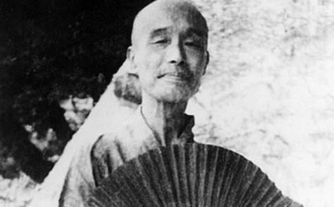

李叔同出家前是一位大儒，大诗人，大艺术家，这是毫无疑问的。出家后他就成了一位大和尚，大法师，大德高僧，这也是毫无疑问的。我们现在要探讨的是，他在出家前曾亲手毁掉了艺术家的李叔同，曾折笔藏印，分遗藏书。并于剃染后发誓：非佛书不书，非佛语不语。其持律之严，人所共睹。为什么到了晚年，却一反固常，不但于讲经弘法时多引儒家故实、警句，而且亲编儒家《格言别录》101条，在《改过实验谈》中开宗明义便说：“谈玄说妙修证次第，自以佛书最为详尽。而我等初学之人，持躬敦品、处事接物等法，虽佛书中亦有说者，但儒书所说，尤为明白详尽，适于初学。故今多引之，以为吾等学佛法者之一助焉。”同时期（1934年），大师给俗侄李晋章致函曾约其购《昨非录》一书，信中说：“四十年前津人喜白摺小楷，恒用《昨非录》，系翰林分写小楷石印精本，共二册，其文字皆嘉言懿行，颇可流传”。等等。
举凡这些对儒学的格言、家训、诗文摘句，在《晚晴老人讲演录》中所辑尚多，这种情况的出现，有人怀疑是不是学术探讨的悖论，千萦万转最后又回到思维的原点。其实，从文化深层考虑，这决不仅仅是一种简单的精神复归，也不是李叔同的“恋儒情结”，而是两种（甚至多种）文化碰撞的结果。因为这时的弘一大师已在佛门修持多年，道岸弥高，虽然那些格言联语，从字面看还是原来的词语，但在大师的眼里，却有了另外的含义，它已不是原来儒学发展时期带有极大功利性的教条，而是用来启蒙佛童修道正身带有普适性的教材了。关于这一点，我们从大师1937年3月28日，在厦门南普陀佛教养正院讲演书法的一段话中可以得到证明。他说：
我想写字这一回事，是在家人的事，出家人讲究写字有什么意思呢？所以这一讲讲写字的方法，我觉得很不对。因为出家人只会写字，其他学问一点也不知道，尤其不懂得佛法，那可以说是佛门的败类……
不过，出家人不是绝对不可以讲究写字的，但不可以用全副精神去应付写字就对了。出家人固应对于佛法全力研究，而于有空的时候，写写字也未尝不可。写字如果写到了有个样子，能写对子、中堂来送与人，以做弘法的一种工具，也不是无益的。
从以上“谈玄说妙”和“论写字方法”两段文字中，不难看出大师晚年“以释观儒”的文化心态。从儒家经典到佛门经卷，他无不谙熟于心。口诵心维，躬行实践。他既是大儒（指出家前），又是大佛，这两重身份就使他与历史上的大居士苏东坡（晚年也耽于佛），同时代人马一浮等区别了开来，也与“愿替众生病，稽首礼维摩”的梁启超区别开来，甚至也与“芒鞋破钵无人识，踏过樱花第几桥”的苏曼殊区别开来。大师僧腊24年，去无定向，居无定所，行不须代步，食不过中午，菜不过二色，粥不过一碗。持律如此谨严，弘法如此勤奋，以身教代言教，这与那些宦途失意，晚岁耽佛，以儒身说佛事，以在家说出家的隔岸观火者，是迥然不同的。一个是现身说法，一个是镜中看花。弘一大师晚年以释观儒，徜徉于儒释两道之间，又不丝毫混淆两者的界限，这于儒于释都是一种创造性的发展。
李叔同青少年时代受到极良好的儒学教育。从蒙学全书中的《三字经》、《百家姓》、《千字文》到《古今贤文》、《幼学琼林》；从《格言联璧》、《千家诗》到《史记》、《文选》。不但涉猎广泛，而且转益多师，广纳博采，儒学的底子打得十分坚实、深厚。人称其为“浊世佳公子”，可以想见他当年的儒雅风度、道德情操的一斑。但他生活的时代已是儒家的末世，西风东渐，一些西方的新知识、新理念，通过严复、梁启超、蔡元培等人，很快翻译介绍到中国，就像是一座紧闭的深宅大院，忽然吹来了一股清风。李叔同敏感的神经很快嗅到了这股清新气息。他先是赞成变法维新——“老大中华非变法无以图存”；接着，到上海南洋公学接受“新学”教育；旋又去日本留学，学习西方文化、艺术。在上海的七年和在日本的六年，是他求学的黄金时代，使他的知识结构发生了质的变化，不但有东方儒学的深厚文脉，也有了西方的科学与民主。后来李叔同走入佛门，但其仁厚之心，慈悲之怀却终始如一。他以慈悲看智慧，这正是佛性的一体两面。智慧主静，慈悲主动。一为存在，一为变化。慈悲是智慧的动觉形态。佛教谈空，空是智慧的东西，而慈悲则与众生世界相应。因此，智慧是万物的一性，而慈悲则是万物的多性。李叔同将“仁舟”化为“慈航”，正是他由一性变多性、由有限变无限的结果。
做了和尚的李叔同的头上，仍然笼罩着艺术家的光环。甚至有人把他看作艺术和尚（如黄福海）。他起初很为此感到困惑和烦恼。到了晚年，佛道研修日臻极境，对艺术的思考也就不津津于形式和技巧，而着眼于宏观气象，大善至美，艺境和禅境在认同机制上有了某种契合。
弘一大师在出家前是艺术家，出家后虽然除书法外摒弃了所有的艺术活动，但他在俗时的艺术成果，特别是音乐（如《送别》、《春游》、《祖国歌》等）和美术（如《少女像》、《裸女画》等）方面，一时不能从人们的心头抹掉。也就是说做了和尚的李叔同的头上，仍然笼罩着艺术家的光环。甚至有人把他看作艺术和尚（如黄福海）。他起初很为此感到困惑和烦恼。到了晚年，佛道研修日臻极境，对艺术的思考也就不津津于形式和技巧，而着眼于宏观气象，大善至美，艺境和禅境在认同机制上有了某种契合。正如丰子恺先生在《我与弘一法师》一文中所说：
艺术的精神，正是宗教的。古人云：“文章一小技，于道未为尊。”又说：“太上立德，其次立言。”弘一法师教人，亦常引用儒家语：“士先器识而后文艺。”所谓“文章”、“言”、“文艺”便是艺术；所谓“道德”、“器识”，正是宗教的修养。宗教与艺术的高下，在此已经明示。（《李叔同——弘一法师纪念册》108页）
佛教的修行纲领是觉正净，觉而不迷，正而不邪，净而不染，并依戒定慧三学，以求达此目标。而艺术的崇高境界是真善美，18世纪德国美学家康德曾说过：“美是道德的善的象征。”他说：我们在日常生活中，也常以道德性的词语来评价自然界和艺术中美的对象。可见审美与道德之间并无鸿沟，两个领域紧紧相连，由一个领域自然而然的就可以过渡到另一个领域。
那么，我们再回过头来看佛家的觉正净，它无疑属于道德的范畴，而真善美则属于美学（哲学）的范畴。弘一大师在艺术上一生追求真善美，他到晚年“以释观儒”——用法眼法心看待前尘影事，宇宙气象，人生百态。总有一种相契而又相离的感觉，自己追求过的东西，它们仿佛就在眼前，但仔细觅索，它们又远远离去。此种心理境界，从他在1935年秋离开净峰寺《咏菊》的佛偈中，可以分明地感到：“我来为植种， 我去花未开。岂无佳色在， 留待后人来。”
佛家以一切外物凡有形者皆为色相，《楞严经》说：“离诸色相，无分别性”。而所谓“空”，即指空幻和虚无，佛教的虚无并不等同于西方的“虚无主义”，如萨特在《存在与虚无》中所阐述的那样。佛经中所说的“五蕴皆空”、“无常若空”等，都有它特定的指涉。弘一大师在讲述《佛法非说空以灭人世》时，曾有下面一段精辟的论述：
大乘佛法，皆说“空”及“不空”两方面。虽有专说“空”时，其实亦含有“不空”之义。故须兼说“空”与“不空”两方面，其义乃为完足。
何谓“空”及“不空”？“空”者是无我，“不空”者是救世之事业。虽知无我，而能做救世之事业，故“空”而“不空”；虽努力做救世之事业，而决不执着有我，故“不空”而“空”。如是真实了解，乃能以无我之伟大精神，而做种种之事业无有障碍也。（《李叔同说佛》82页）
弘一大师这一段话，实质上已触及物质与精神的关系。从哲学层面来看，“色”与“空”二律背反，相辅相成。就如美学家朱光潜先生在弘一大师诞辰100周年题辞中所说的，他是“以出世的精神，做入世的事业”。
李叔同是一位伟大的艺术天才，这是一个多世纪以来人所公认的。他的出家所以引起学界的震惊，就是因为这一举动意味着一位天才艺术家的毁灭。甚至有人情急而戾，说：“李叔同放着艺术家不当，而去当和尚，看来，天才与疯子之间没有太大的距离。”
行文至此，我想插入一点个人近日的体会。我们在写话剧《芳草碧连天》的时候，因为是为话剧100年纪念，所以只写了他的前半生，写他对于新文化（包括话剧）方面的贡献，出家一事则点到为止（只在一头一尾有佛家的画面）。在讨论剧本时，有人提出异议，认为必须加上三分之一的佛，否则便不完整，人物便没有分量。我们反复斟酌，觉得这很困难，一部话剧没有那么大的容量。后来，我们请大悲禅院的智如法师来看戏，倒是这位出家人很客观，他看戏后给这出戏定了个调，让大家心服口服。他说：“为纪念中国话剧100年，你们写了弘祖光明的前半生，写了他辉煌的艺术成就，爱国精神，这也是对弘一大师的宣传，也是一件功德无量的事。弘一大师博大精深，没有前半生的艺术辉煌，也就没有后半生的佛光慧业。”
弘一大师39岁看破红尘，放弃艺术，遁入空门，选择了他人生最后的坐标，也决非一般常人之举。他的艺术光辉和佛门慧业交相映衬，孰是孰非，扑朔迷离，也许是他留给后人的永久之谜。